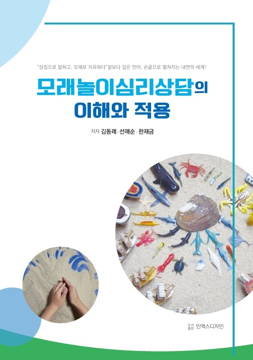
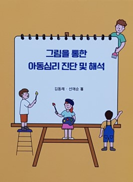
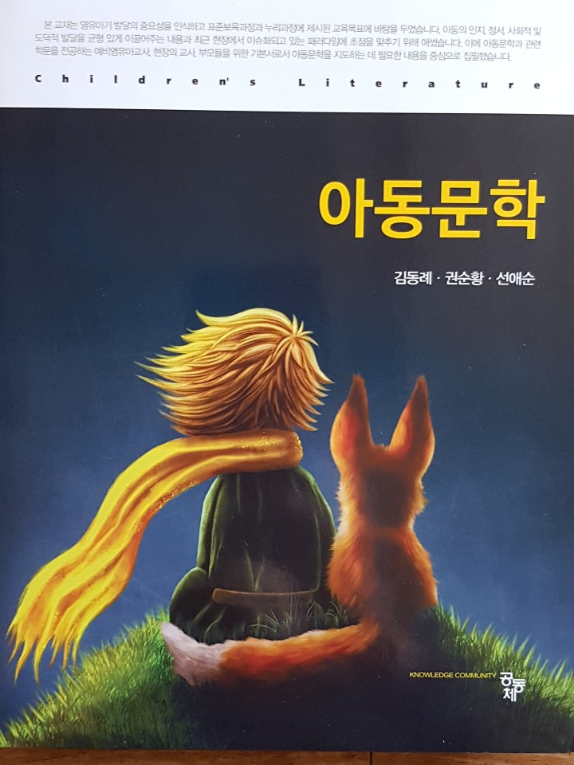
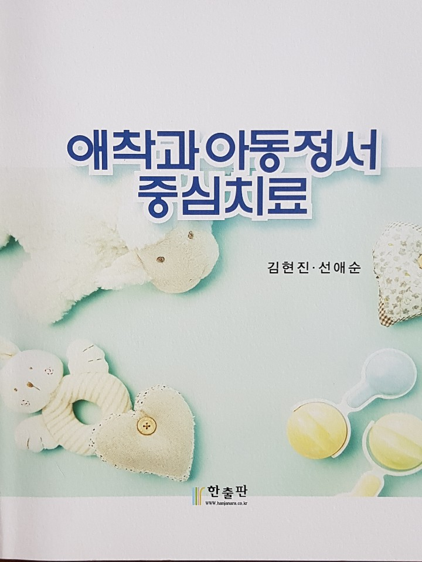
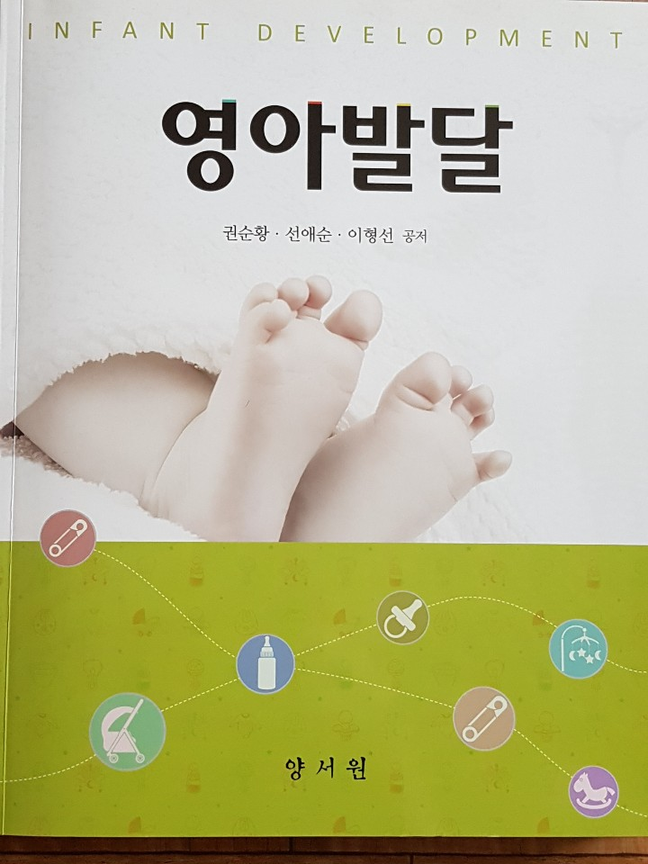
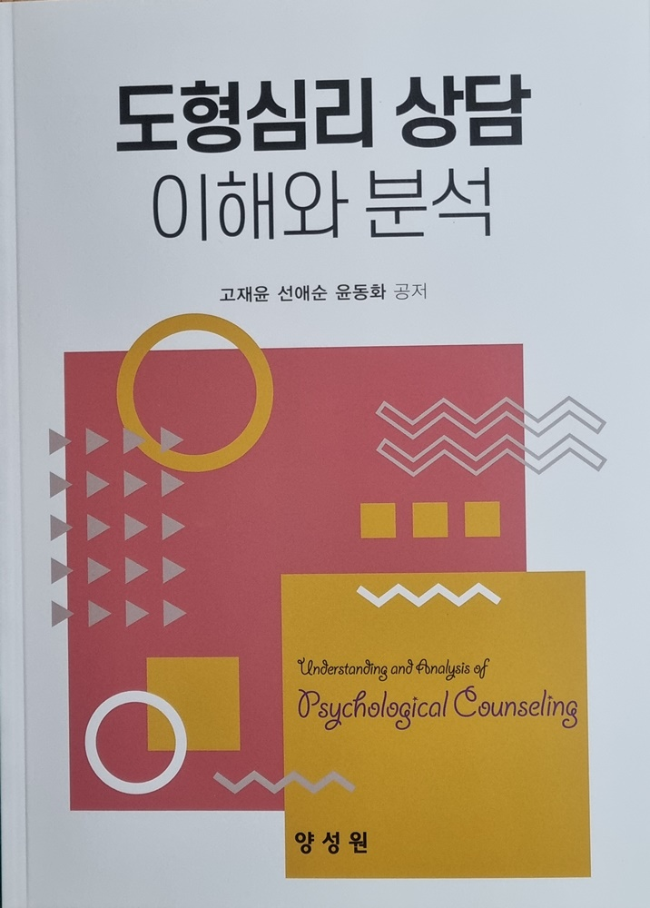
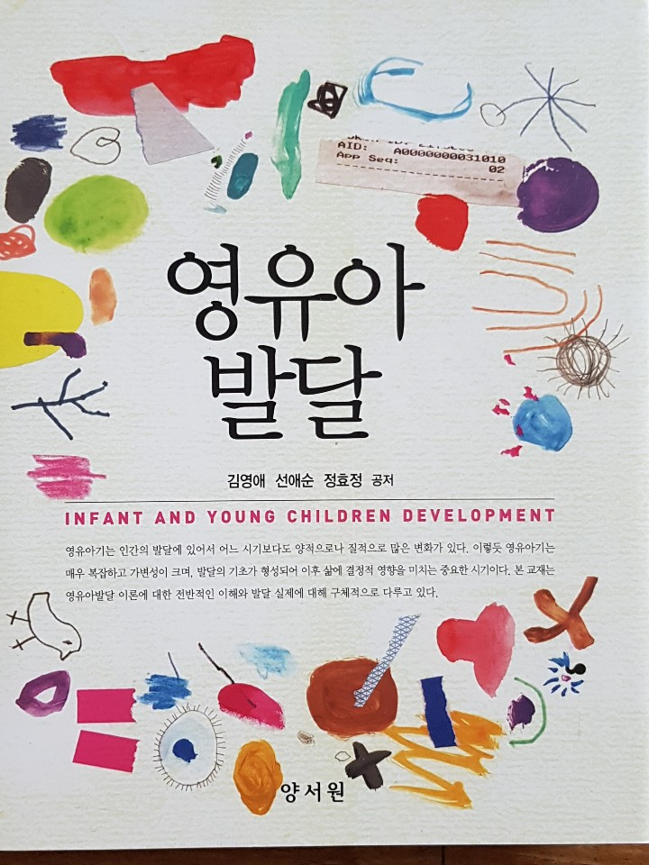

archive
저서 · 연구 · 언론보도
아카이브
저서, 논문, 학위, 공공교육, 외부 보도 기록을 한곳에서 확인할 수 있습니다. 수면, 발달, 애착, 통합교육을 중심으로 이어지는 작업의 기록입니다.
9
저서
6
논문 · 학위
3
공공교육
2
언론보도
검색 결과가 없습니다.
저서 books
9 entries
2025모래놀이심리상담의 이해와 적용

2022도형심리 상담 이해와 분석

2021영유아생활지도 및 상담

2020그림을 통한 아동심리 진단 및 해석

2018아동문학

2018영유아발달
 2017
2017
아동상담
 2015
2015
영아발달

2010아동 독서치료 : 이론과 실제
논문 · 학위 research
6 entries-
2013 degree학위
아동의 모래상자치료에서 상징물, 관계성, 심리적 표현 및 개성화 과정에 관한 연구
-
2012 journal논문
다문화가정 아동의 가족기능과 사회적 능력과의 관계
-
2011 journal논문
다문화가정 수줍음 아동의 독서치료 프로그램 효과
-
2010 degree학위
그림동화책 읽어주기가 다문화가정 아동의 언어능력 향상에 미치는 효과
-
2010 case논문
이혼가정 아동의 정서적 행동 변화를 위한 모래상자치료 사례연구
-
ongoing record저널
수면 · 발달 · 애착 · 통합교육 기록
공공교육 public
3 entries-
2022 training공공교육
고창교육지원청 위(Wee)센터 교원연수 실시
-
2020 training공공교육
돌봄전담사 역량강화 연수 실시
-
2019 program공공교육
부모교육 · 아빠와 함께 책 놀이터 프로그램
언론보도 media
2 entries-
2024 media보도
광주100인의 아빠단 멘토링 체험 성료
-
2010 media보도
완도군 건강가정지원센터장으로 가족 방문상담 활동 소개